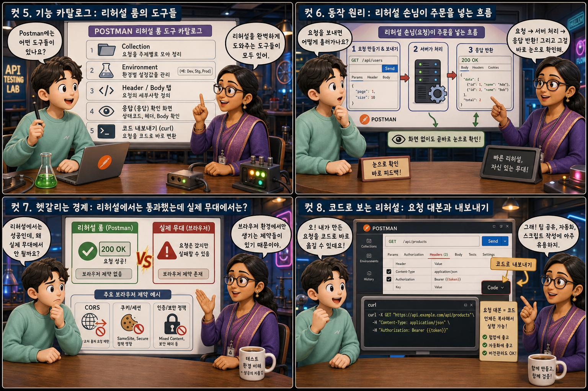
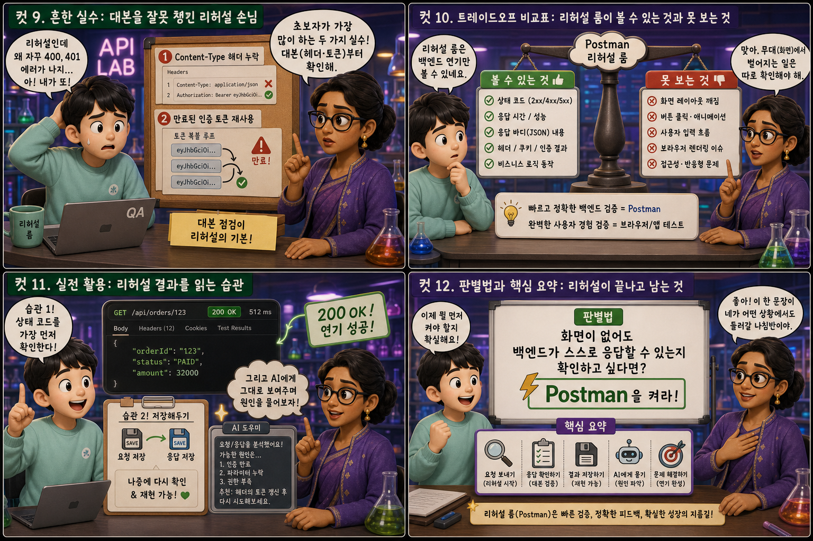

실제 손님 없이 주방을 시험 가동해보는 ‘리허설 룸’에 비유해, API 테스트 도구 Postman을 12컷으로 풀어봅니다.
Postman→Backend API
웹 서비스를 만들 때 화면과 백엔드는 보통 동시에 완성되지 않습니다. 화면이 아직 준비되지 않았어도, 그 뒤에서 주문을 받고 처리하는 백엔드 API가 제대로 동작하는지는 먼저 확인해볼 수 있어야 합니다. Postman은 실제 손님, 즉 실제 화면 없이도 주방을 시험 가동해보는 리허설 룸입니다. 이 글에서는 그 리허설이 어떻게 이루어지는지 열두 장면으로 하나씩 풀어봅니다.
PART 1 / 3 — 리허설의 시작 (컷 01–04)
fourcut-01 — 컷 01 ~ 04
컷 01
화면도 없는데 어떻게 미리 확인할까
화면(프론트엔드)이 아직 완성되지 않아도, 그 뒤에서 돌아가는 백엔드가 제대로 동작하는지는 먼저 확인할 수 있다.
텅 빈 무대 위에 점선으로만 그려진 화면 하나가 떠 있습니다. 왼쪽에는 오렌지색 리허설 조끼를 입은 마네킹 손님이 서 있고, 손에는 주문서 대신 작은 로켓 모양 아이콘이 들려 있습니다. 오른쪽에는 다크 그레이 톤의 주방이 조용히 불을 밝히고 있고, 둘 사이에는 여닫이 서빙 문 하나가 놓여 그 둘을 이어줍니다. Postman은 바로 이 리허설 손님 역할을 맡는 도구이며, 실제 화면이 완성되기 전이라도 백엔드가 잘 돌아가는지 먼저 점검할 수 있게 해줍니다. Postman — API Testing
컷 02
정의부터 명확히: 가짜 손님을 자처하는 도구
Postman은 실제 화면 없이도 백엔드 API에 직접 요청을 보내고 응답을 눈으로 확인할 수 있게 해주는 API 테스트 도구다.
Postman은 실제 사용자 화면이 없어도 백엔드 서버에 직접 요청을 보내고 그 응답을 눈으로 확인할 수 있게 해주는 도구입니다. GET, POST, PUT, DELETE 같은 다양한 요청을 원하는 형태로 만들어 보낼 수 있고, 서버가 어떤 데이터를 돌려주는지 곧바로 확인할 수 있습니다. 실제 손님이 아직 오지 않았어도 리허설 손님을 세워 주방이 잘 돌아가는지 미리 점검하는 것과 같은 역할입니다.
컷 03
나란히 비교: 주소창의 손님 vs 리허설 손님
브라우저 주소창은 GET 요청만 간단히 확인할 수 있지만, Postman은 모든 종류의 요청과 헤더, 인증까지 자유롭게 구성해 테스트할 수 있다.
브라우저 주소창에 주소를 입력하면 GET 요청 하나 정도는 간단히 확인할 수 있지만, 그 이상은 하기 어렵습니다. Postman은 GET뿐 아니라 POST, PUT, DELETE 같은 모든 요청 방식을 지원하고, 헤더와 인증 토큰, 요청 본문까지 자유롭게 구성해 실제 서비스와 똑같은 상황을 만들어볼 수 있습니다. 지나가며 창문만 들여다보는 손님과, 리허설 조끼를 입고 메뉴판과 신분증까지 챙겨 들어온 손님의 차이입니다.
컷 04
한 문장으로 정리하면
Postman은 화면 없이도 백엔드에 직접 주문을 넣어보는 리허설 손님이다.
POSTMAN
화면 없이 주문을 넣는 손님
BACKEND API
요청을 받아 실제로 응답하는 주방
definition
화면이 완성되기 전이라도, 혹은 화면과 상관없이 서버 쪽 로직만 따로 점검하고 싶을 때 Postman이 그 자리를 대신 채워줍니다. 이 한 문장만 기억해도 Postman이 왜 필요한지 대부분 이해할 수 있습니다.
PART 2 / 3 — 도구와 동작 원리 (컷 05–08)

fourcut-02 — 컷 05 ~ 08
컷 05
기능 카탈로그: 리허설 룸의 도구들
Postman에는 요청을 모아두는 Collection, 설정값을 담는 Environment, 요청의 세부사항을 정하는 Header/Body 탭, 응답을 확인하는 화면, 그리고 요청을 코드로 내보내는 curl 기능이 있다.
Collection은 자주 쓰는 요청들을 폴더처럼 모아두는 기능이라 매번 새로 만들 필요 없이 저장해둔 요청을 다시 꺼내 쓸 수 있습니다. Environment는 서버 주소나 토큰처럼 상황마다 바뀌는 값을 변수로 묶어두어, 개발 서버와 운영 서버를 오갈 때도 값만 바꿔 끼우면 되게 해줍니다. Header/Body 탭에서는 요청에 담을 인증 정보나 데이터를 채워 넣고, 응답 화면에서는 상태 코드와 JSON 본문을 곧바로 확인하며, curl 내보내기를 쓰면 지금 만든 요청을 그대로 명령어 코드로 가져갈 수도 있습니다.
컷 06
동작 원리: 리허설 손님이 주문을 넣는 흐름
Postman에서 요청을 만들어 보내면 서버가 이를 처리해 응답을 돌려주고, 그 응답을 화면 없이도 곧바로 눈으로 확인할 수 있다.
요청 작성→Send 클릭→HTTP request→백엔드 + DB→status + JSON response→응답 확인
요청 방식과 주소, 필요하면 헤더와 본문까지 채운 뒤 Send 버튼을 누르면, 그 요청이 실제 서비스와 똑같은 경로로 서버까지 전달됩니다. 서버는 이 요청을 받아 필요한 처리를 하고 상태 코드와 데이터를 응답으로 돌려보내며, Postman은 그 응답을 화면 하단에 곧바로 펼쳐 보여줍니다. 실제 화면을 거치지 않고도 요청과 응답이라는 핵심 대화를 직접 눈으로 확인할 수 있는 것이 이 리허설의 핵심입니다.
컷 07
헷갈리는 경계: 리허설에서는 통과했는데 실제 무대에서는?
Postman에서 요청이 성공했다고 해서 실제 브라우저 화면에서도 반드시 똑같이 동작하는 것은 아니다.
Postman은 브라우저가 아니기 때문에, 웹 브라우저만이 강제하는 몇 가지 보안 규칙의 적용을 받지 않습니다. 대표적으로 CORS(교차 출처 리소스 공유) 제한은 브라우저가 다른 출처로의 요청을 막는 규칙인데, Postman에서는 이 제약 없이 요청이 통과되곤 합니다. 쿠키나 세션 처리 방식도 브라우저와 Postman이 다르게 동작할 수 있습니다. 그래서 Postman에서 잘 되던 요청이 실제 화면에서는 막히는 경우가 있으며, 이는 Postman이 틀린 것이 아니라 리허설 무대와 진짜 무대의 규칙이 다르기 때문임을 기억해야 합니다. passes in Postman ≠ passes in browser
컷 08
코드로 보는 리허설: 요청 대본과 내보내기
Postman 화면에서 채운 요청 하나하나는 곧바로 curl 같은 명령줄 코드로 그대로 옮겨 적을 수 있다.
# 그대로 옮겨 적은 대본curl -X POST https://api.example.com/orders \
-H "Content-Type: application/json" \
-d '{"item":"coffee","qty":2}'
Postman 화면에서 메서드와 주소, 헤더, 본문을 채워 넣으면 그 자체가 이미 하나의 완성된 요청이 됩니다. Postman은 이 요청을 curl 명령어 같은 코드 형태로 그대로 내보내는 기능을 제공하는데, 위 화면에서 만든 POST 요청도 curl -X POST로 시작하는 한 줄 명령어로 바뀝니다. 이렇게 내보낸 코드는 팀원과 공유하거나, 서버 코드를 작성할 때 참고 자료로 쓰거나, AI에게 그대로 붙여넣어 질문할 때도 유용합니다.
PART 3 / 3 — 실전 감각과 요약 (컷 09–12)

fourcut-03 — 컷 09 ~ 12
컷 09
흔한 실수: 대본을 잘못 챙긴 리허설 손님
JSON 형식으로 데이터를 보내면서 Content-Type 헤더를 빠뜨리거나, 만료된 인증 토큰을 계속 복사-붙여넣기 해서 테스트하는 것은 초보자가 가장 자주 저지르는 실수다.
⚠ Content-Type 헤더 없이 JSON을 전송
Body 탭에 JSON 형식으로 데이터를 적었더라도 Headers 탭에 Content-Type: application/json을 함께 넣어주지 않으면, 서버는 그 글자 뭉치를 어떤 형식으로 읽어야 할지 몰라 요청을 제대로 처리하지 못하는 경우가 많습니다.
⚠ 만료된 토큰을 계속 복사-붙여넣기
로그인해서 받은 인증 토큰을 매번 손으로 복사해 붙여넣다가, 이미 시간이 지나 만료된 토큰을 계속 재사용하며 똑같이 실패하는 요청을 반복하는 것도 흔한 실수입니다.
두 실수 모두 응답으로 돌아오는 상태 코드와 에러 메시지를 자세히 읽어보면 금방 원인을 찾을 수 있습니다. 주방 문 앞을 지키는 경비가 낡은 배지를 보고 문을 열어주지 않는 것처럼, 서버도 형식이 맞지 않거나 자격이 만료된 요청은 통과시켜주지 않습니다.
컷 10
트레이드오프 비교표: 리허설 룸이 볼 수 있는 것과 못 보는 것
Postman은 화면 없이도 백엔드 동작을 빠르고 정확하게 검증할 수 있지만, 실제 사용자 화면에서 벌어지는 레이아웃이나 상호작용 문제까지는 확인할 수 없다.
same backend, different views
비교 축
Postman (리허설 룸)
실제 화면 (진짜 무대)
확인 속도
빠름 — 화면 없이 바로 확인
느림 — 화면까지 완성돼야 확인
백엔드 로직 검증
가능
간접적으로만 가능
화면 레이아웃/디자인
확인 불가 (점선 뿐)
확인 가능
사용자 클릭/상호작용
확인 불가
확인 가능
필요한 준비물
주소와 요청 정보만
완성된 화면 전체
Postman은 화면을 만들 필요 없이 주소와 요청 조건만 갖추면 되기 때문에, 백엔드 로직이 제대로 동작하는지 빠르고 정확하게 검증할 수 있습니다. 하지만 리허설 손님인 마네킹은 실제 사용자처럼 버튼을 누르고 화면을 스크롤하지 않기 때문에, 레이아웃이 깨지거나 버튼이 눌리지 않는 문제 같은 실제 화면에서의 상호작용 문제는 확인할 수 없습니다. 그래서 Postman으로 백엔드를 먼저 검증한 뒤, 실제 화면에서 다시 한번 확인하는 두 단계가 함께 필요합니다.
컷 11
실전 활용: 리허설 결과를 읽는 습관
응답의 상태 코드를 가장 먼저 확인하는 습관을 들이고, 요청과 응답을 저장해두었다가 AI에게 그대로 보여주며 원인을 물어보면 문제를 훨씬 빠르게 해결할 수 있다.
🔍 가장 먼저 볼 것 — 상태 코드
200번대 — 성공
400번대 — 요청 자체의 문제
500번대 — 서버 쪽 문제
🔍 막히면 이렇게 — AI에게 그대로 질문
요청/응답 화면 캡처하기
"왜 이 요청이 401로 실패했을까?" 물어보기
원인 힌트 받아 좁혀가기
응답이 돌아오면 JSON 본문의 세세한 내용보다 먼저 상태 코드를 확인하는 습관을 들이는 것이 좋습니다. 200번대는 성공, 400번대는 요청 자체의 문제, 500번대는 서버 쪽 문제를 대략적으로 알려주는 신호이기 때문입니다. 그리고 에러가 나면 그 요청과 응답 화면을 그대로 캡처하거나 복사해서 AI에게 보여주며 “왜 이 요청이 실패했을까”라고 물어보면, 처음 접하는 사람도 문제의 원인을 훨씬 빠르게 좁혀갈 수 있습니다.
컷 12
판별법과 핵심 요약: 리허설이 끝나고 남는 것
화면이 없어도 백엔드가 스스로 응답할 수 있는지 확인하고 싶다면 Postman을 켜라.
가장 간단한 판별법은 이것입니다. 화면이 아직 없거나, 화면과 상관없이 백엔드 혼자서 제대로 응답하는지 확인하고 싶다면 Postman을 켜면 됩니다. Postman은 주소창보다 훨씬 넓은 범위의 요청을 테스트할 수 있고, 상태 코드와 응답 본문을 곧바로 눈으로 확인시켜 주지만, 실제 화면에서 벌어지는 레이아웃이나 상호작용 문제까지 대신 확인해주지는 않습니다. 리허설 손님이 무대를 떠나도 주방은 계속 돌아가는 것처럼, Postman으로 확인한 결과는 실제 서비스가 켜져 있는 한 그대로 유효합니다.
주소창보다 넓은 테스트 범위Collection·Environment로 정리요청→응답 흐름 확인브라우저와 다른 규칙 주의화면 문제까진 못 봄판별법: 화면 없이 확인하고 싶으면 Postman
리허설이 끝나도, 주방은 계속 돌아간다
Postman은 화면이 없어도 백엔드에 직접 주문을 넣어보는 리허설 손님이고, 백엔드는 그 요청을 받아 묵묵히 응답하는 주방입니다. 리허설 손님이 조끼를 벗고 무대를 떠나도, 실제 서비스가 켜져 있는 한 백엔드는 계속 불을 밝힌 채 돌아갑니다.